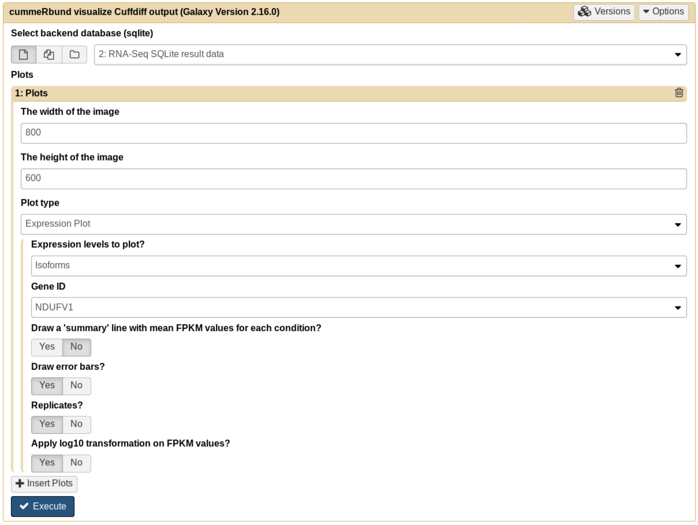

Visualization of RNA-Seq results with CummeRbund
Overview
QuestionsObjectives
- How are RNA-Seq results stored?
- Why are visualization techniques needed?
- How to select our desired subjects for differential gene expression analysis?
Requirements
- Manage RNA-Seq results
- Extract the desired subject for differential gene expression analysis
- Visualize information
Time estimation: 1h
Introduction
RNA-Seq analysis helps researchers annotate new genes and splice variants, and provides cell- and context-specific quantification of gene expression. RNA-Seq data, however, are complex and require both computer science and mathematical knowledge to be managed and interpreted.
Visualization techniques are key to overcome the complexity of RNA-Seq data, and represent valuable tools to gather information and insights.
Agenda
In this tutorial, we will deal with:
Reasons for visualizing RNA-Seq results
To make sense of the available RNA-Seq data, and overview the condition-specific gene expression levels of the provided samples, we need to visualize our results. Here we will use CummeRbund.
CummeRbund is an open-source tool that simplifies the analysis of a CuffDiff RNA-Seq output. In particular, it helps researchers:
- managing, integrating, and visualizing the data produced by CuffDiff
- simplifying data exploration
- providing a bird’s-eye view of the expression analysis by describing relationships betweeen genes, transcripts, transcription start sites, and protein-coding regions
- exploring subfeatures of individual genes or gene-sets
- creating publication-ready plots
A typical workflow for the visualization of RNA-Seq data involving CummeRbund:

CummeRbund reads your RNA-Seq results from a SQLite database. This database has to be created using CuffDiff’s SQLite output option.
Tip: SQLite output with CuffDiff
Instruct CuffDiff to organize its output in a SQLite database to be read CummeRbund.

Importing RNA-Seq result data
Hands-on: Data upload
- Create a new history
Import the
CuffDiff SQLitedatasetTip: Importing data via links
- Copy the link location
- Open the Galaxy Upload Manager
- Select Paste/Fetch Data
- Paste the link into the text field
- Press Start
Comments
Rename the dataset to “RNA-Seq SQLite result data”
By default, when data is imported via its link, Galaxy names it with its URL.
CuffDiff’s output data is organized in a SQLite database, so we need to extract it to be able to see what it looks like.
For this tutorial, we are interested in CuffDiff’s tested transcripts for differential expression.
Hands-on: Extract CuffDiff results
- Extract CuffDiff with the following parameters
- “Select tables to output” to
Transcript differential expression testingInspect the table
Tip: Inspecting the content of a file in Galaxy
- Click on the eye (“View data”) on the right of the file name in the history
- Inspect the content of the file on the middle
Each entry represents a differentially expressed gene, but not all are significant. We want to keep only those that are reported as significant differentially expressed.
Questions
- How to retain only the significant differentially expressed genes?
- Which column stores this information?
Click to view the answers
- We need to filter on the column storing the record's significance
- Column 14
Filtering and sorting
We now want to first highlight the most significant differentially expressed genes in our analysis, and then obtain informative visualizations.
Hands-on: Extract CuffDiff’s most significant differentially expressed genes
- Filter with the following parameters
- “Filter” to the extracted table from the previous step
- “With following condition” to an appropriate filter over the target column (see questions below when in doubt)
Questions
- What column stores the information of significance for each record?
- Which conditional expression has to be set to filter all records on the selected column?
- What happened to the records in the original table?
Click to view the answers
- column 14
- c14=='yes'
- All records whose "significant" field was set to "yes" have been retained, while the others filtered out
Look at your data. The differential expression values are stored on column 10, we will sort (descending) all records on the basis of their value at the 10th column
- Sort : with the following parameters
- “Sort Dataset” to the filtered table
- “on column”, “with flavor” and “everything in” to the appropriate values (see above)
Questions
- Since the start of our filtering process, how many records now represent the significant subset for extracting informations?
- What does this shrinking of the number of lines represent?
Click to view the answers
- Click on the boxes in your history, their small preview higlights the number of lines: from ~140,000 to 219
- This process represents a necessary step to gather insights on the biological meaning of our samples in our analyses: putting the original raw RNA-Seq result data into context, cutting down the less-meaningful records to focus on what is needed to go from data to information
CummeRbund
With CummeRbund we can visualize our RNA-Seq results of interest.
CummeRbund generates always two outputs:
- the plot
- the R script responsible for generating the plot
We are interested in visualizing all expression values of all transcripts relative to the most significant differentially expressed gene we found in the previous section.
Hands-on: Visualization
- CummeRbund with the following parameters
- Click on “Insert plot”
- “Width” and “Height” to
800x600- “Plot type” to
Expression Plot- “Expression levels to plot” to
Isoforms- “Gene ID” to
NDUFV1- Your input form parameters should look like the following. If so, click on “Execute”

Our first CummeRbund plot is the “Expression Plot”:

The Expression Plot represents the expression of all isoforms of a single gene (NDUFV1) with replicate FPKMs exposed.
Our plot has a modest number of isoforms, and is therefore already readable. However, in case of 5 or 6 isoforms, the plot can look very busy. We can therefore change the visualization type by selecting another type of plot.
Hands-on: Visualization
- CummeRbund with the following parameters
- Click on “Insert plot”
- “Width” and “Height” to
800x600- “Plot type” to
Expression Bar Plot- “Expression levels to plot” to
Isoforms- “Gene ID” to
NDUFV1

Expression Bar Plot of a single gene (NDUFV1) with replicate FPKMs exposed.
Comment
These plots are shown also in this Galaxy video tutorial.
Would you like to obtain more sophisticated visualization of your RNA-Seq analysis results? Select different CummeRbund plot options, and look at their parametrizations according to the filtering and sorting operations we performed
Conclusion
Visualization tools help researchers making sense of data, providing a bird’s-eye view of the underlying analysis results. In this tutorial we overviewed the advantages of visualizing RNA-Seq results with CummeRbund, and gained insights on CuffDiff’s big-data output by plotting informations relative to the most significant differentially expressed genes in our RNA-Seq analysis.
Key points
- Extract informations from a SQLite CuffDiff database
- Filter and sort results to highlight differential expressed genes of interest
- Generate publication-ready visualizations for RNA-Seq analysis results
Useful literature
Useful information regarding this type of analysis with descriptions and paper references for the tools used in this tutorial, and literature for this analysis techniques and interpretations can be found here.
Congratulations on successfully completing this tutorial!
Feedback
Please take a moment and provide your feedback on this tutorial. Your feedback will help guide and improve future revisions to this tutorial. Feedback Form